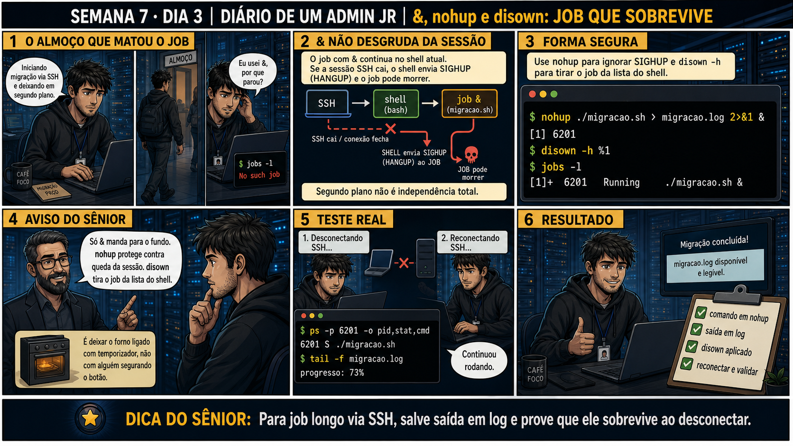

DIARIO DE UM ADMIN JR. | FASE 1 — LINUX, DO BÁSICO AO AVANÇADO
🔗 Conecta com os dois últimos dias: kill encerra, renice ajusta prioridade —
ambos assumem que o processo continua na sua sessão. Hoje o problema é outro: como rodar algo longo via SSH
sem que ele morra quando você fecha o laptop pro almoço.
🔓 Privilégio de hoje: rodar jobs longos que sobrevivem à queda da sessão SSH.
Você ganha o hábito de usar nohup + disown pra desacoplar de verdade um job da sessão que o iniciou.
Semana 7 · Dia 3 | Nível Júnior
Jobs em Background: &, nohup, disown
segundo plano não é independência total — & sozinho não sobrevive a uma sessão que cai
ANTES DE ALTERAR, OBSERVE. DEPOIS DE ALTERAR, VALIDE.

1. O chamado
Você inicia uma migração longa via SSH com ./migracao.sh & e sai pro almoço.
Ao voltar e reconectar, jobs -l mostra No such job — o processo morreu junto com
a sessão que caiu.
💡 Passa o mouse nas palavras destacadas pra ver uma dica rápida — clica se quiser a explicação completa com analogia.
2. O sênior te conta
Quarta-feira, Semana 7
Nos últimos dois dias você aprendeu a encerrar processos com o sinal certo e a ajustar prioridade sem
matar nada — mas os dois assumiam que o processo continuava dentro da sua sessão. Hoje o problema é
diferente: como rodar algo longo via SSH e não perder tudo quando você fecha o laptop pro almoço.
Aprendi essa lição da pior forma possível, num sábado de manutenção. Iniciei uma migração de dados que
levaria cerca de duas horas, com um simples ./migracao.sh &. Achei que o
& já tinha resolvido — o job foi pro segundo plano, o prompt voltou, tudo parecia certo.
Fui almoçar tranquilo. Minha conexão de internet caiu no meio do almoço (coisa besta, roteador
reiniciando), a sessão SSH morreu — e junto com ela, a migração inteira. Voltei, reconectei, rodei
jobs -l, e a resposta foi um seco "No such job". Duas horas de progresso, evaporadas.
O que eu não sabia é que & só manda o job pro segundo plano DENTRO da mesma sessão — ele
continua vinculado a ela. Quando a sessão morre, o shell manda um sinal SIGHUP (hang up,
literalmente "desligar o telefone") pra todos os processos filhos, e a maioria morre junto, sem chance
de terminar. nohup existe exatamente pra isso: faz o processo ignorar o SIGHUP, como se
tivesse contrato próprio, independente de quem o iniciou. E disown completa o trabalho,
tirando o job da lista de responsabilidades do shell — duas camadas diferentes de proteção, não
redundância.
Hoje você pratica exatamente o que eu deveria ter feito naquele sábado: iniciar com
nohup, redirecionar a saída pra um log, aplicar disown -h, e testar de
verdade — desconectando e reconectando — antes de considerar o job seguro.
3. Decodificador de conceitos
Clica em qualquer termo pra ver a definição completa e uma analogia do dia a dia:
4. Ferramentas e leitura da evidência
Comando
O que observar e por que importa
nohup comando > log 2>&1 &
Ignora SIGHUP e salva toda a saída (normal e de erro) num arquivo de log.
disown -h %1
Remove o job da tabela de jobs do shell, desvinculando completamente.
ps -p PID -o pid,stat,cmd
Confirma que o processo continua rodando mesmo depois de reconectar.
Resultado esperado: job rodando em background, com PID confirmado, desvinculado do shell atual.
Por que fizemos isso: essa é exatamente a sequência que teria salvo a migração da história — nohup no processo, disown no shell, as duas camadas juntas.
Cilada comum: esquecer o redirecionamento (> teste.log 2>&1) — sem ele, a saída do processo pode travar ou se perder quando a sessão original cai.
Ação: feche a sessão SSH de propósito (ou simule com exit) e reconecte.
$ exit
# reconecte via SSH de novo
Resultado esperado: nova sessão aberta, job original ainda deve estar rodando — o teste real que faltou na história do sábado.
Por que fizemos isso: testar de verdade, não só assumir que vai funcionar, é a diferença entre confiança real e esperança — a mesma lição do restore testado (Semana 6).
Cilada comum: pular esse teste achando "óbvio que vai funcionar" — é exatamente esse pulo que causou a perda de progresso na história de hoje.
🧑🏫 Aqui entra o Mentor (em breve): se o job morrer mesmo com nohup, este é o ponto onde o chat com o Sênior-IA vai ajudar a diagnosticar o motivo.
Ação: confirme com ps -p que o processo sobreviveu, e acompanhe o log pra ver o progresso.
$ ps -p <PID> -o pid,stat,cmd
$ tail -f teste.log
Resultado esperado: processo confirmado vivo, log mostrando progresso contínuo (não travado no mesmo número).
Por que fizemos isso: ps -p confirma existência, mas só o log confirma progresso real — a distinção que a Questão 2 vai testar.
Cilada comum: confiar só no ps -p e fechar o chamado — um processo pode existir e estar travado ao mesmo tempo, sem o log você não sabe qual é o caso.
Ação: documente comando usado, teste de desconexão realizado, resultado confirmado.
# anote no seu diário de bordo:
Comando: nohup ./teste.sh > teste.log 2>&1 & + disown -h
Teste de desconexão: sessão fechada e reaberta, processo sobreviveu
Progresso confirmado via: tail -f teste.log
Resultado esperado: registro completo reproduzindo o painel 6 da prancha de hoje.
Por que fizemos isso: esse registro é o que prova, da próxima vez, que a proteção nohup+disown foi de fato testada — não só assumida.
Cilada comum: documentar só "usei nohup", sem registrar que o teste de desconexão real foi feito — sem esse detalhe, a documentação não prova nada de verdade.
6. Antes de ver as opções — tenta responder
🧠 Recall ativo: por que & sozinho não protege um job de uma sessão SSH que cai?
& só manda o job pro
segundo plano DENTRO da mesma sessão — se a sessão SSH cai, o shell envia
SIGHUP e
o job pode morrer junto.
nohup
existe justamente pra fazer o processo ignorar esse sinal.
QUESTÃO 1 de 3
7. Questão comentada — clica numa alternativa
Você precisa iniciar uma migração longa via SSH que deve continuar rodando mesmo
se a sessão cair. Qual é a forma correta?
💡 Analogia do Sênior para Fixar: O operador '&' no final do comando coloca a tarefa em segundo plano, mas se você fechar o terminal, ela morre; o 'nohup' coloca tampões de ouvido nela contra o sinal de fechamento (SIGHUP).
QUESTÃO 2 de 3 — cenário de erro real
7.1 Depois de reconectar, ps -p confirma o PID rodando — isso é suficiente pra fechar o chamado?
ps -p 6201 confirma que o processo ainda está ativo, mesmo depois da desconexão e
reconexão do SSH.
O que ainda falta confirmar antes de considerar a migração bem-sucedida?
💡 Analogia do Sênior para Fixar: O arquivo 'nohup.out' é o gravador que fica ligado na sala vazia: captura todas as saídas e erros do script para você ler com calma no dia seguinte.
QUESTÃO 3 de 3 — detalhe que confunde todo iniciante
7.2 "nohup e disown fazem a mesma coisa, só um é redundante?"
Um colega acha que usar nohup e disown juntos é redundante, já que os dois
parecem "desconectar" o job de alguma forma.
Essa suposição está correta?
💡 Analogia do Sênior para Fixar: O comando 'jobs' e 'fg' são como a bandeja de abas minimizadas: mostram quais tarefas estão rodando no fundo e trazem uma delas de volta para a sua frente.
8. Procedimento profissional
Identifique se o job precisa sobreviver a uma queda de sessão.
Use nohup, redirecionando saída e erro pra um arquivo de log.
Use disown -h pra desvincular completamente do shell atual.
Teste desconectando e reconectando de verdade, confirmando com ps -p.
Acompanhe o log pra confirmar progresso, não só existência do processo.
Prevenção
Crie um alias ou template padrão de equipe (ex.: `run-longo comando`) que já embute
nohup + redirecionamento + disown automaticamente. Isso remove a dependência de lembrar a sequência
completa toda vez que alguém for iniciar um job longo via SSH.
9. Validação e encerramento
nohup foi usado, não só &, pra jobs que precisam sobreviver à sessão.
disown -h foi aplicado pra desvincular completamente do shell.
O teste de desconexão real foi feito, não só assumido que funcionaria.
O progresso foi confirmado pelo log, não só a existência do processo.
Rollback e limites
Se o job precisar ser interrompido depois de nohup+disown, ele ainda pode ser
encontrado com ps e encerrado com kill normalmente — desvincular do shell não significa perder controle
total sobre o processo.
💡 Sobre repetição espaçada: "camadas diferentes de proteção" conecta com
lvextend+resize2fs (Semana 6) — sempre duas etapas complementares, nunca uma sozinha sendo suficiente. O
Anki vai conectar os dois.
10. Resposta final
Alternativa correta: B. Nesta aula, a decisão correta foi rodar nohup
./migracao.sh > migracao.log 2>&1 &, seguido de disown -h. O ponto central do caso é este: pra job longo
via SSH, salve saída em log e prove que ele sobrevive ao desconectar.
🔓 O que você desbloqueou hoje
Capacidade de rodar jobs longos que sobrevivem a quedas de sessão SSH. Amanhã
você aprende tmux — pra quando você precisa não só rodar e esquecer, mas voltar e continuar interagindo
depois.